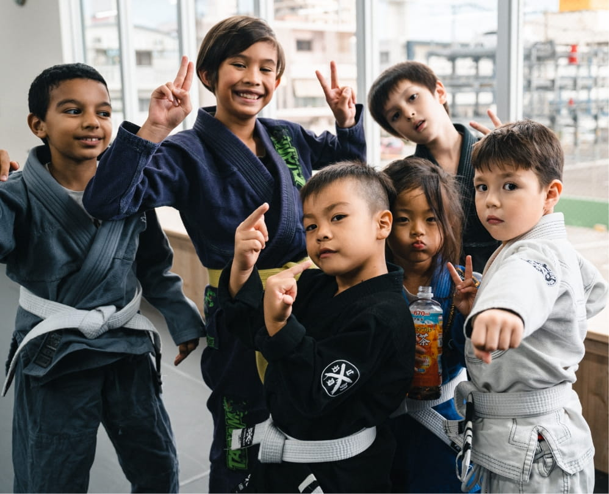
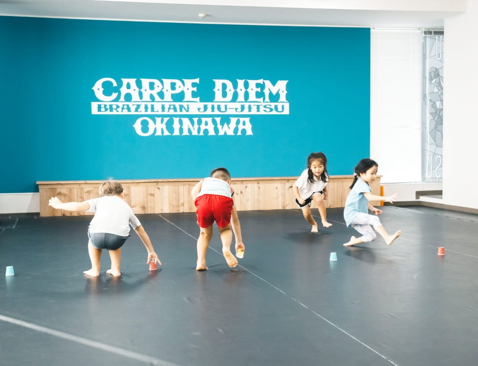
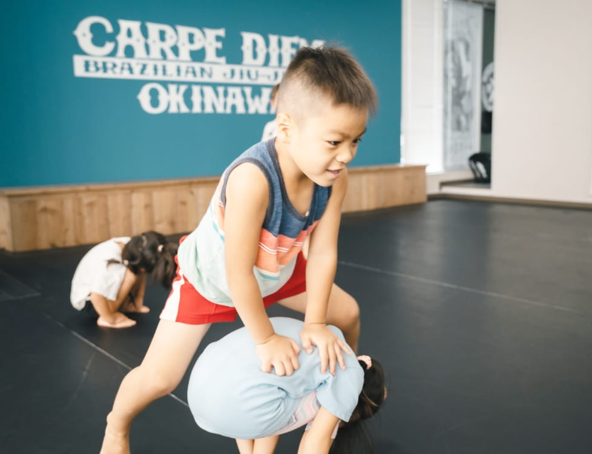
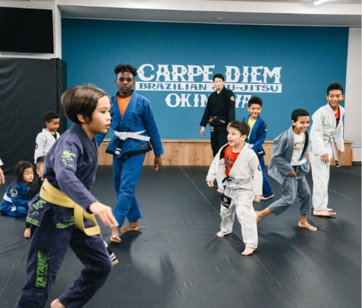
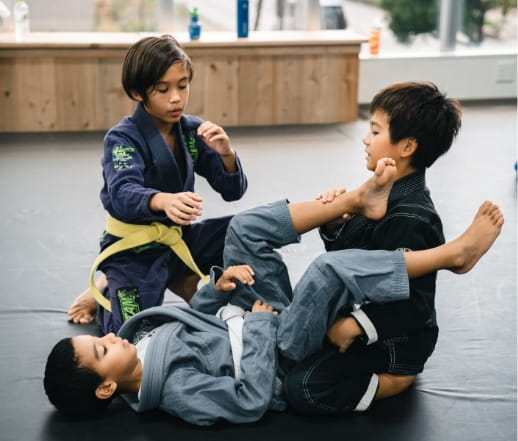
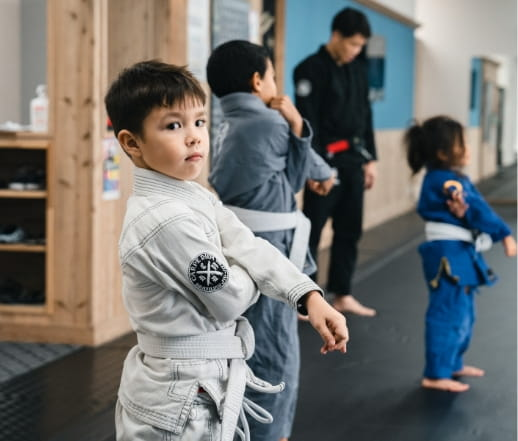
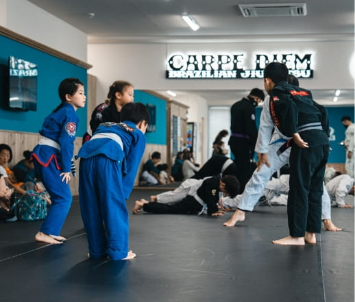
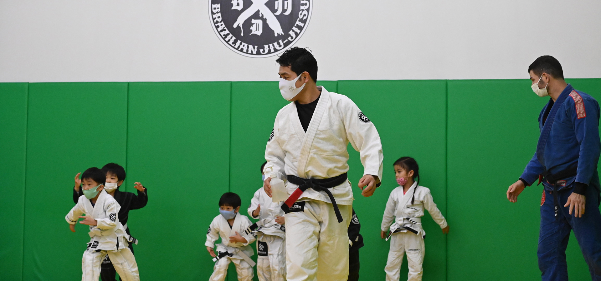

身体を知る
全身を動かし、姿勢・重心・バランスを体験します。
01KIDS JIU-JITSU — AGES 4+
身体と頭を使って楽しむ、子どものブラジリアン柔術。
MOVE. THINK. GROW.
02FOR PARENTS
最初から上手にできる必要はありません。無料体験で、インストラクターや仲間、クラスの空気までゆっくり確かめられます。
CLASSREAL MOMENTS
HOVER TO DISCOVER









03WHY JIU-JITSU?
考える。動く。試してみる。うまくいかなければ、また考える。力だけでは答えが決まらない面白さがあります。
全身を動かし、姿勢・重心・バランスを体験します。
相手の動きを見て、次の一手を自分で選びます。
失敗と工夫を重ね、自分なりの答えを探します。
ルールと練習相手を尊重し、共に上達します。
戦うためではなく、落ち着いて行動するために。距離、バランス、身体のコントロールを、ルールの中で学びます。

REAL CLASS / OKINAWA04SAFETY FIRST
安全は「怪我をしない」という断言ではなく、リスクを小さくする具体的な積み重ねです。
05JIU-JITSU WITHOUT BORDERS
世界各地で親しまれているBrazilian Jiu-Jitsu。沖縄でも、さまざまな背景を持つ仲間と同じルールで学べます。

06CLASS & PRICE
※料金の税込・税別区分は正式公開前に要確認
身体と頭を使う柔術クラス
身体を動かす楽しさから
07CLASS SCHEDULE
添付マスターデータをもとに更新。クラス変更・休講はご予約時にご確認ください。
PRIVATE LESSONS — ALL TIME OK / 詳細はお問い合わせください
08FIRST EXPERIENCE
必要最小限の項目だけ。
インストラクターとクラスをご案内。
基本の動きから挑戦。
「また行きたい」を大切に。
09PARENTS FAQ
はい。体験では、上手にできることより無理なく参加できることを大切にします。
4歳から参加できます。正式な年齢区分は予約時にご確認ください。
性別に関係なく参加できます。まずは見学・体験で雰囲気をご確認ください。
詳細はご予約後にご案内します。道着レンタルの有無は事前にご確認ください。
10FREE TRIAL
入会を決めるのは、そのあとで大丈夫です。